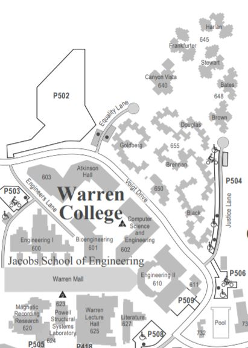
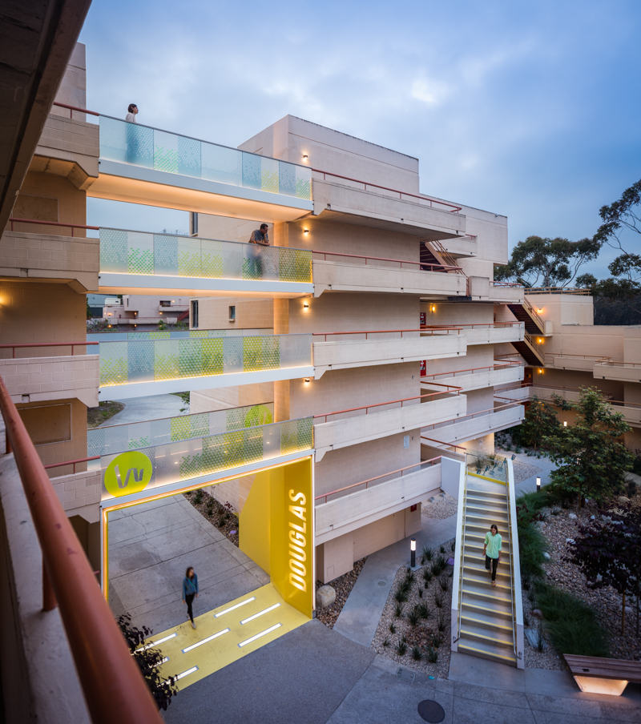

Warren
Toward a Life in Balance
The Earl Warren College motto, "Toward a Life in Balance," is
inspired by the philosophy of our namesake, former Chief Justice Earl Warren.
The College is dedicated to cultivating ethically responsible citizen scholars
who will flourish during their careers at UC San Diego and beyond.
Enrollment(2020): 5,438 - 17.1% of total enrollment


There are a total of 4 general education requirements for Warren College: Warren Writing,
Ethics and Society, Formal Skills, and Programs of Concentration (PofCs) or Area Studies.
Warren Writing
A two-course sequence that must be taken at UCSD.
Ethics and Society
- First: WCWP 10A
- Second: WCWP 10B
A two-course sequence that must be taken at UCSD. Courses may not overlap
with any other general-education requirement.
Formal Skills
- First: PHIL 27 or POLI 27
- Second: PHIL 28 or POLI 28
Two courses in calculus, symbolic logic, computer programming
and/or statistics are required from the following list:
Programs of Concentration (PofCs) or Area Studies
- HDS 60 MATH 3C, 4C MATH 10A or 20A MATH 10B or 20B MATH 11, 18
- PHIL 10, 12 POLI 30 or 30D, 5 or 5D (or Econ 5) PSYC 60, 70 SOCI 60
- LIGN 17 COGS 3, 8, 14A, 14B COGS 18/CSE 7 CSE 3, 8A, 8B, 11
- CSS 1, 2ECE 5, 15, 25 MAE 5 NANO/CENG 15
Students are required to complete two PofCs or Area Studiesoutside of
your major discipline.
They must represent all three disciplines:
- Humanities and Fine Arts
- Natural Sciences, Math, and Engineering
- Social Sciences